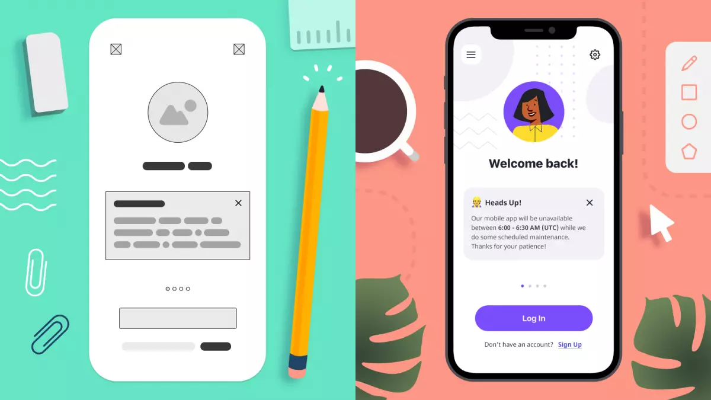

What is a Hi-Fi Prototype? A polished, interactive prototype that looks and behaves close to the final product, with real content, branding and clickable flows.
- Translated wireframes into pixel-perfect, high-fidelity screens.
- Applied typography, colours, branding, and imagery.
- Created interactive points that mimic user flows.
On this page
Context
Now that you’ve built your low-fidelity wireframes, the next step is to transform them into high-fidelity prototypes in Figma. This stage focuses on visual design, branding, and realistic interactions to simulate the final product experience.
Goal / Learning Outcome
By the end of this activity, students will have:
- Translated wireframes into pixel-perfect, high-fidelity screens.
- Applied typography, colours, branding, and imagery.
- Created interactive points that mimic user flows.
Main Exercise
- Open Figma and duplicate your low-fidelity wireframes.
- Apply visual design elements (color palette, fonts, logos, spacing).
- Replace placeholders with real content and images.
- Add interactivity using Figma prototyping tools (links, transitions, animations).
- Build out the full task flow as a clickable prototype.
Extra Notes
- The word ‘fidelity’ means ‘faithfulness’. High-fidelity prototypes should as faithful to to the real app or website as possible.
- Use your style guide for consistency.
- Use the same screen size for consistency
- Keep Hi-Fi realistic but simple — avoid overcomplicating.
Template

On the right hand side we can see the high fidelity version of the early lo-fi screen.
Tips
- Don’t just make it “pretty” — ensure the task flow remains strong.
AI Assist
You can upload your low fidelity screen and ask stitch to: ‘Make high fidelity screens’ and export into Figma (In Beta)
Summary
High-fidelity prototypes bring your product vision to life by combining visual design and interactive flows. They help teams and users experience the product in a realistic way, providing valuable feedback before development begins. This stage ensures your design is polished, consistent, and testable, bridging the gap between concept and implementation.